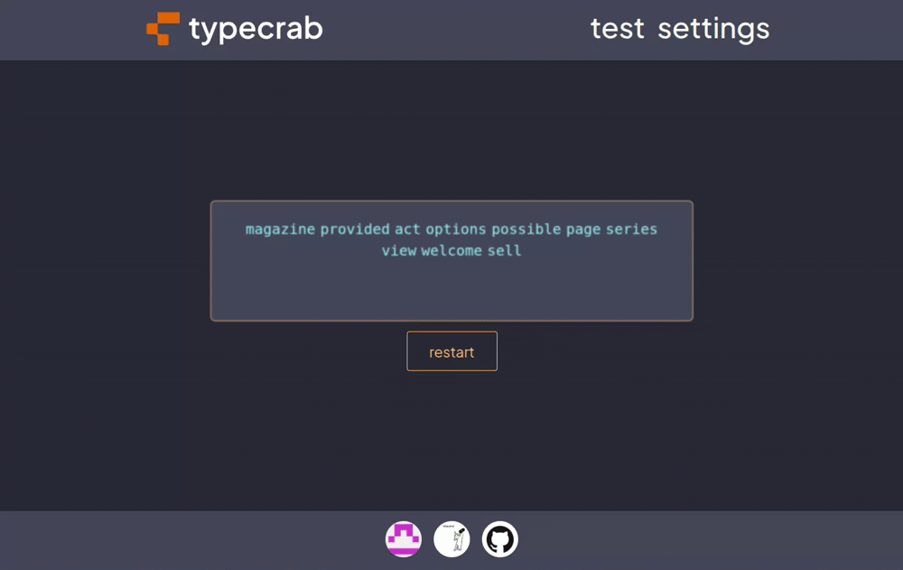

About

This project is a lightweight and customizable typing test. It is implemented in Rust and features both a command-line interface (CLI) and a web-based user interface (Web UI). Users can practice typing in different modes, track performance statistics, and improve their typing speed.
The main motivation behind this project is that most existing typing tests often focus either on visual effects and gamification or, conversely, on a minimalistic interface without flexibility. This leads to some tools being too heavy and overloaded with unnecessary features, while others are limited in customization and use.
Our project is aimed at creating a fast, cross-platform typing test with minimalistic design, support for custom settings and allowing users to practice typing both while casually browsing the web and while coding in the terminal during breaks or context switches.
Architecture
The most interesting aspect of the project is that it follows a modular design, separating core logic from user interfaces. The entire application logic is concentrated in the core module, which exposes it through a public API (Core API). Both interfaces simply plug into that API and hold no logic of their own, so they stay fully independent from each other.
┌───────────┐ ┌───────────┐
│ cli │ │ web │
├───────────┴───────────────┐ ├───────────┴────────────────┐
│ │ │ │
│ ┌───────────┐ │ │ ┌────────────┐ │
│ │ │ │ │ │ │ │
│ │ CLI │ │ │ │ Web UI │ │
│ │ │ │ │ │ │ │
│ └─────┬─────┘ │ │ └──────┬─────┘ │
│ │ │ │ │ │
└─────────────┼─────────────┘ └──────────────┼─────────────┘
│ │
uses uses
│ │
│ ┌────────────┐ │
│ │ core │ │
│ ├────────────┴─────────────────┐ │
│ │ │ │
│ │ ┌──────────────┐ │ │
│ │ │ │ │ │
└────┼──────►│ Core API │◄──────┼────┘
│ │ │ │
│ └──────────────┘ │
│ │
└──────────────────────────────┘
While I mainly focused on the terminal interface, my colleague Artem Zaitsev primarily concentrated on the web interface.

All settings, color schemes and everything else are deliberately identical in both versions, so switching between the interfaces requires no relearning.